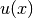
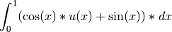
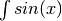
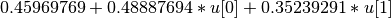

Tutorial¶
This tutorial aims to cover a number of topics:
- What are DSL’s and what might they be used for
- A simple example of the design of the DSL (IntGen)
- The FLAME programming model for partitioned loops
- The combination of the FLAME programming model and DSL’s
What is a Domain Specific Language¶
Domain specific languages (DSL) refers languages developed with a particular domain in mind. The advantage of a DSL over a general-purpose language is the domain usually contains optimizations that are not available for general use. These optimizations could be very specific and thus not interesting for a general audience, or perhaps unsafe without the assumptions made by the domain.
For example, take matrices. In a general purpose language the matrix will be
an array of numbers. While it may be trivial that for any given matrix
 we know
we know  , it is not trivial to know this for an array
of numbers. Especially since low level code only sees the transpose as an
operation on the members of the array. Thus if a user actually transposes a
matrix twice a large amount of work goes into doing operations that were
unnecessary. If on the other hand, a user made such a statement in a DSL that
understood what matrices are then it could optimize the operation without any
trouble.
, it is not trivial to know this for an array
of numbers. Especially since low level code only sees the transpose as an
operation on the members of the array. Thus if a user actually transposes a
matrix twice a large amount of work goes into doing operations that were
unnecessary. If on the other hand, a user made such a statement in a DSL that
understood what matrices are then it could optimize the operation without any
trouble.
While domain specific optimizations are a huge bonus for DSL’s the downside often is portability or interoperability. The language features you want are at the mercy of the person implementing the code generator. This drawback has largely been a primary reason for many to prefer libraries rather DSL’s to provide domain knowledge. At the very least it seems easier to dive into a library and discover what is going on rather than debug the full code generator. This situation is exactly why the Ignition project was started. By providing a simple framework for developing DSL’s the hump of developing a whole code generator will lessen.
IntGen¶
To give a full example, let’s take numerical integration. If a code uses an integral with discrete and symbolic parts, there are huge gains if the code evaluates the symbolic parts before they are run. For example take the following integral, where  comes from a discrete function in the code:

A quick optimization would be to evaluate  and  at the quadrature points, assuming two quadrature points, the new code would
be:
at the quadrature points, assuming two quadrature points, the new code would
be:

But that code is meaningless with out the formula above! What’s more the user has to evaluate the symbolic parts by hand which becomes yet another source of error. It would be better to have a high level code that generates the low level code when a new integral (or even better precision) is required.
Using IntGen¶
In IntGen the above integral is translated into the following code:
u = DiscFunc("u")
x = Symbol("x")
dx = Dom(x, 0, 1)
integral = (Func(cos(x), x)*u + Func(sin(x), x))*dx
select_quad_rule(num_pts=2, name="Gauss")
gen_file("ex1", [integral], ["eval_gen"], ['u'])
And the generated file that implements the integral would be:
const unsigned int NUM_QUAD_PTS = 2;
const double QUAD_PTS[2] = {-0.57735026919, 0.57735026919};
const double QUAD_WTS[2] = {1.0, 1.0};
inline double eval_gen(double* u)
{
double ret_val = 0.0;
ret_val += 0.459697694131860;
ret_val += 0.488876937571022*(u[0])
+ 0.352392910067197*(u[1]);
return ret_val;
}
For the full example see demo/int_gen.
Using the FLAME Interface¶
Further Resources¶
As more features and languages are added to Ignition, you will be able to see simple demonstrations in demo directory. Additionally, all supported features should have a test in the test directory where they are implemented. Often looking at the tests are a good way to discover what can be done.